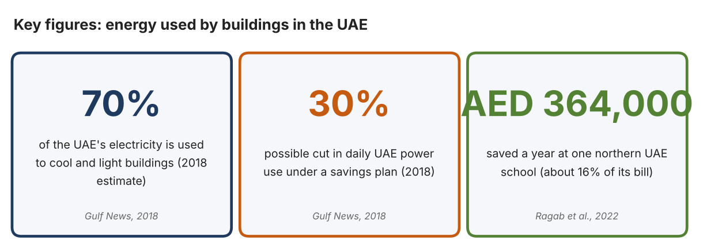
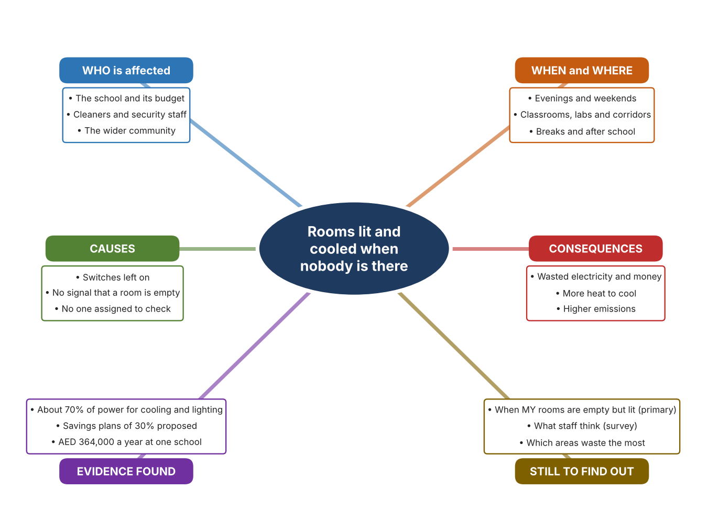
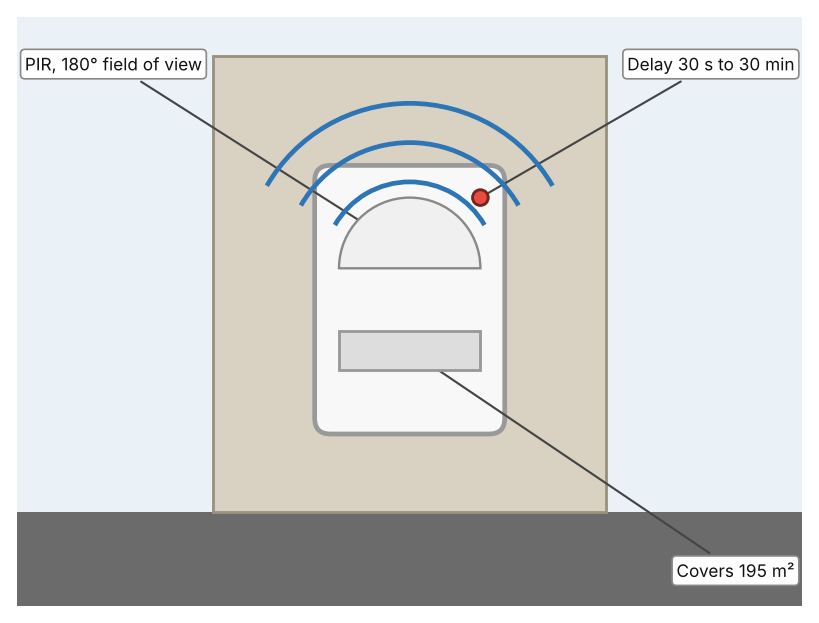
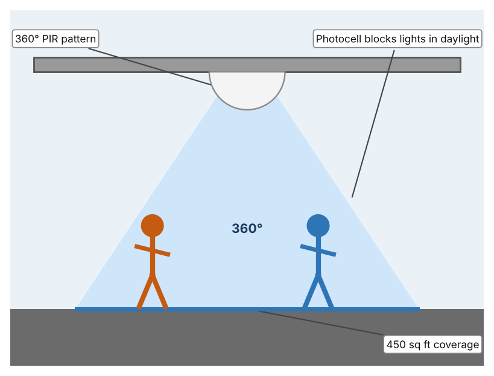
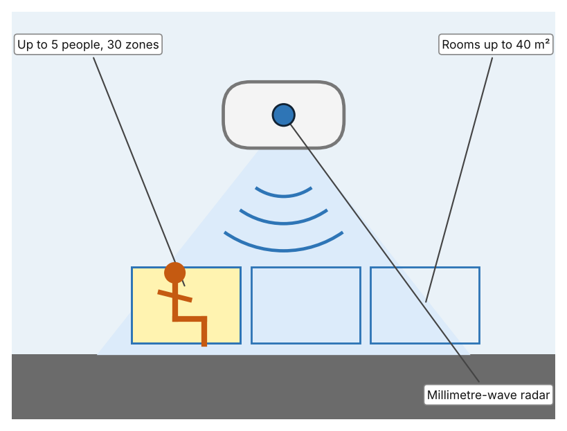

A1 · Design need
Identify and explain the problem faced by your client and community.
My client is the Energy and Facilities Team of a Dubai school, represented by the Facilities Manager. The team has noticed that classrooms, laboratories and corridors can stay lit and cooled for hours after everyone has left, particularly in the evening and at weekends. The team needs the energy wasted in empty spaces to be reduced, and it needs to know when rooms are really in use.
The people most affected are the school and its budget, because every unnecessary hour of lighting and cooling is an avoidable cost. Cleaners and security staff are a second group, because they work in the building when most rooms are empty. The wider community is a third group, because electricity for the whole country has an environmental cost.
The need is real because buildings use a great deal of power in the UAE. Gulf News reported in 2018 that about 70% of the power consumed in the UAE is used to cool and light buildings, and that a savings plan could cut daily power consumption by 30% (Shuey and Baldwin). A study of a large school in the northern UAE found that energy measures, mainly in lighting and air conditioning, could save AED 364,000 a year, about 16% of its electricity bill (Ragab et al.). The newspaper report is from 2018 and the study covers one school, so I do not yet know how much power my school wastes in empty rooms.
Figure 1 summarises the key numbers. The 2018 figures are national estimates and the study covers one school, so I treat them as a pattern and not as proof about my school. In my own words: a lit empty room costs the same as a busy one, so the waste is invisible unless someone looks. Figure 2 is my mind map of the problem.
303 words


A2 · Research plan
Six research questions of different types, each with a priority, a research type and evidence.
| # | Question | Priority | Primary / secondary | Evidence | Brief answer |
|---|---|---|---|---|---|
| 1 | Factual: How much of the UAE's power is used by buildings, and how much could be saved? | High | Secondary | Gulf News, 2018 (Appendix A, Source 1) | About 70% of power is used to cool and light buildings; a plan could cut daily consumption by 30%; targeted education and government buildings could save up to one third. |
| 2 | Factual: How much energy could a UAE school save? | High | Secondary | Ragab et al., 2022 (Appendix A, Source 2) | A large school in the northern UAE could save AED 364,000 a year, about 16% of its bill; the study recommended motion sensors in classrooms and laboratories, costing about AED 20,000 and saving AED 93,691 a year. |
| 3 | Conceptual: How can a system tell whether a room is occupied? | Medium | Secondary | IEA, 2026 (Source 3); Leviton pages (Sources 4 and 5); Aqara page (Source 6) | Passive infrared sensors detect the movement of warm bodies; microwave radar can sense people who are very still; occupancy sensors are described as mature and cost-effective. |
| 4 | Debatable: Should rooms be switched off by people, by timers, or by sensors that detect presence? | Medium | Secondary | Appendix A, Sources 3, 4, 5 and 6 | People can forget, timers ignore real use, and sensors may switch off while a room is occupied if people sit still. My view: detecting presence is the fairest approach. |
| 5 | Debatable (challenges my assumption, UAE source): Electricity is cheap in the UAE, so wasted lighting and cooling in a school is not a serious problem. | High | Secondary | Gulf News, 2018 (Source 1); Ragab et al., 2022 (Source 2) | The 2018 article says 70% of power goes to cooling and lighting, and the school study found AED 364,000 a year in savings. Cheap power does not make waste harmless, but I must measure my own school. |
| 6 | Factual (primary): When are rooms at our school empty but still lit, and how do staff decide to switch off? | High | Primary | Own empty-room audit and staff survey (Appendix A, Sources 7 and 8) | [Student data needed: write the number of rooms found lit and empty (with the time) and survey averages, then two sentences on the pattern you see.] |
A3 · Existing products
Three significantly different products, each analysed with ACCESS FM, with pros and cons.
Product 1: Wall-switch occupancy sensor (Leviton ODS10-IFW)

Illustration by the author based on the ODS10-IFW page, Leviton (Appendix A, Source 4). [Student: replace with a photo from the source, cited MLA 9]
Product 2: Ceiling occupancy sensor (Leviton OSC04-IAW)

Illustration by the author based on the OSC04-IAW page, Leviton (Appendix A, Source 5). [Student: replace with a photo from the source, cited MLA 9]
Product 3: Radar presence sensor (Aqara FP2)

Illustration by the author based on the Aqara FP2 listing, Multitronic (Appendix A, Source 6). [Student: replace with a photo from the source, cited MLA 9]
ACCESS FM analysis
| ACCESS FM | Product 1 | Product 2 | Product 3 |
|---|---|---|---|
| Aesthetics | Decora white wall plate that replaces a switch (Leviton). | White ceiling-mounted disc (Leviton). | Compact radar puck with a magnetic stand; ceiling or wall mounting (Multitronic). |
| Cost | Price not stated. | Price not stated. | The listing showed inconsistent prices, so I do not quote one. |
| Customer | Rooms with a wall switch, such as offices and classrooms. | Rooms with open ceilings, up to 450 sq ft. | People with a smart-home system (HomeKit, Alexa, Google Home or Home Assistant). |
| Environment | 120–240 VAC, 50/60 Hz, 6 A load; no neutral wire; adjustable light override of 20 to 5,000+ lux. | 24 VDC Class II; photocell prevents lights coming on when daylight is enough. | Powered by USB-C; 2-year warranty. |
| Size | Fits a standard wallbox; 195 m² coverage. | Coverage 450 sq ft at 8–10 ft mounting. | Rooms up to 40 m². |
| Safety | Commercial grade; CE listed; red LED shows detection. | Low-voltage 24 VDC wiring. | Fall detection and alerts when ceiling-mounted. |
| Function | Switches lights on with movement and off after a delay; manual override; 180° view adjustable to 60°. | Switches lights on with movement and off after 30 s to 30 min. | Detects presence including breathing; up to 30 zones, up to 5 people. |
| Materials | Fresnel lens over two PIR sensors; other materials not stated. | Materials are not stated. | Materials are not stated. |
Pros and cons
| Product 1 | Product 2 | Product 3 | |
|---|---|---|---|
| Pro | Replaces an existing switch and is easy to adjust. | Covers all directions from the ceiling and avoids waste in bright rooms. | Detects still people, so lights are less likely to switch off on someone sitting quietly. |
| Con | Cannot see still people well and covers only one direction. | Needs low-voltage wiring. | Needs a smart-home system and power cable, and has no clear cost on the listing. |
A4 · Design brief
Restate the need, summarise the research and the existing products, and state the design intent.
My client, the Energy and Facilities Team of a Dubai school, needs the energy wasted in empty rooms to be reduced, based on knowing when rooms are actually used. The problem is real: about 70% of the UAE's power is used to cool and light buildings, and a plan could cut daily consumption by 30% (Appendix A, Source 1). A UAE school study found that measures including lighting and air conditioning could save AED 364,000 a year, about 16% of its bill (Appendix A, Source 2).
My research shows that a lit room costs the same whether it is used or empty, so waste can only be avoided by knowing about presence (Appendix A, Sources 1 and 3). The sources are national or cover one school, so I need my own evidence. My debatable questions led me to decide that people, timers and sensors each cover only part of the problem, and my challenged assumption (that cheap electricity makes waste unimportant) showed me that the figures say otherwise. I will gather my own evidence with the empty-room audit and the survey, always with permission (Appendix A, Sources 7 and 8).
I analysed three very different existing solutions. A wall-switch occupancy sensor detects movement over 195 m² and switches off after a set delay, but it can miss people who sit still (Appendix A, Source 4). A ceiling occupancy sensor covers 360° and uses a photocell to keep lights off in daylight, but it needs low-voltage wiring (Appendix A, Source 5). A radar presence sensor detects people even when still and tracks up to five, but it needs a smart-home system and its cost is unclear (Appendix A, Source 6). They give me three ideas for inspiration: detecting movement at the switch, detecting from above, and detecting presence by radar. Each has a weakness that another covers.
My design intent is therefore to create a solution that detects when a space is unoccupied and reduces the energy used for lighting or cooling. It must be affordable, reliable without annoying people by switching off too soon, simple to install and adjust, and safe. I have deliberately not fixed what form it will take. That decision will be made in Criterion B, after I analyse my own audit and survey against the evidence in Appendix A.
383 words
Appendix A · Research notes and sources
Secondary sources in MLA 9, with notes and where each source is used.
| # | Source (MLA 9) | Key notes | Used in |
|---|---|---|---|
| 1 | Shuey, Scott, and Derek Baldwin. “UAE Keen to Cut Energy Demand.” Gulf News, 15 Sept. 2018, gulfnews.com/technology/uae-keen-to-cut-energy-demand-1.697930. Accessed 21 Oct. 2026. | About 70% of power used to cool and light buildings; plan could cut daily consumption by 30%; targeted government and education buildings up to one third under Emirates Energy Star. Page shows a last-updated date of 2018 and the article is old. | A1; A2 Q1 and Q5; A4. |
| 2 | Ragab, Karim Mohamed, et al. “A Study and Assessment of the Status of Energy Efficiency and Conservation at School Buildings.” American University of Sharjah Repository, 2022, repository.aus.edu/entities/publication/98e7878b-b112-47cc-a770-f8151154cdc5. Accessed 21 Oct. 2026. | Large school in the northern UAE; savings AED 364,000 a year (about 16% of the bill); motion sensors in classrooms and laboratories cost about AED 20,000 and save AED 93,691 a year. | A1; A2 Q2 and Q5; A4. |
| 3 | Delmastro, Chiara, et al. “The Next Wave of LED Lighting: Smarter, Circular and More Efficient.” International Energy Agency, 6 Mar. 2026, iea.org/commentaries/the-next-wave-of-led-lighting-smarter-circular-and-more-efficient. Accessed 21 Oct. 2026. | Occupancy and daylight sensors are mature, cost-effective and give significant savings, especially in non-residential buildings; no percentage given. | A2 Q3 and Q4; A4. |
| 4 | “Occupancy Sensor, PIR, 3x3 Wall Switch, 195m2, 120-240V, White, Decora (ODS10-IFW).” Leviton, leviton.com/products/ods10-ifw. Accessed 21 Oct. 2026. | PIR with segmented Fresnel lens; 195 m²; 180° (adjustable to 60°); 120–240 VAC; 6 A; delay 30 s to 30 min; light override 20–5,000+ lux; no neutral needed; 5-year warranty; price not stated. | A2 Q3 and Q4; A3 Product 1; A4. |
| 5 | “Occupancy Sensor, PIR, Ceiling Mount, 450SF, White (OSC04-IAW).” Leviton, leviton.com/products/OSC04-IAW. Accessed 21 Oct. 2026. | PIR; 450 sq ft; 360°; 24 VDC Class II; 8–10 ft mounting; 30 s to 30 min delay; photocell override; 5-year warranty; price not stated. | A2 Q3 and Q4; A3 Product 2; A4. |
| 6 | “Aqara Presence Sensor FP2.” Multitronic, multitronic.fi/en/products/4006608/aqara-presence-sensor-fp2. Accessed 21 Oct. 2026. | mmWave radar; rooms up to 40 m²; up to 30 zones; up to 5 people; light sensor; works with HomeKit, Alexa, Google Home and Home Assistant without a hub; USB-C; 2-year warranty; displayed prices were inconsistent and are not quoted. | A2 Q3 and Q4; A3 Product 3; A4. |
| 7 | Primary: empty-room audit, completed by the student on [date]. Accessed own data. | [Student: summarise your counts.] | A2 primary question; A4. |
| 8 | Primary: survey of [number] people, completed on [date]. | [Student: summarise your averages.] | A2 primary question; A4. |
Primary research instrument 1: empty-room audit
Student walks the school at set times with permission and a staff member, recording only rooms and lighting, never people.
| Room | Time | Lights on? (Y/N) | AC on? (Y/N) | Room empty? (Y/N) | Notes |
|---|---|---|---|---|---|
| Classroom 1 | |||||
| Laboratory | |||||
| Corridor | |||||
| Library |
Primary research instrument 2: survey
Rate each statement from 1 (strongly disagree) to 5 (strongly agree). Collect responses with permission and record no names.
| Statement | 1 | 2 | 3 | 4 | 5 | Total responses |
|---|---|---|---|---|---|---|
| I switch off lights when I leave a room. | ||||||
| Lights are often left on in empty rooms at school. | ||||||
| I know who is responsible for switching off lights. | ||||||
| I would accept lights switching off automatically when a room is empty. |